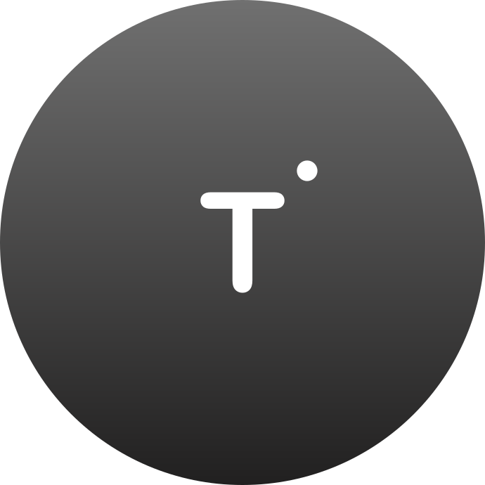
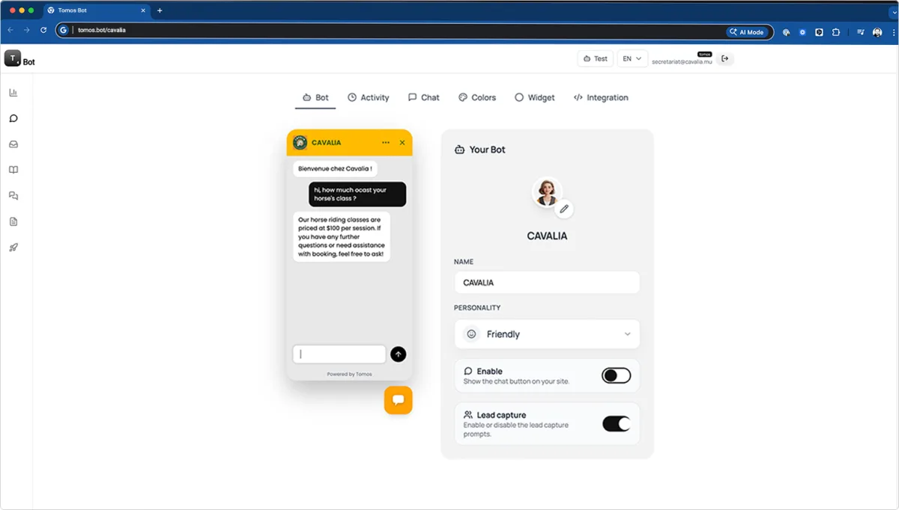
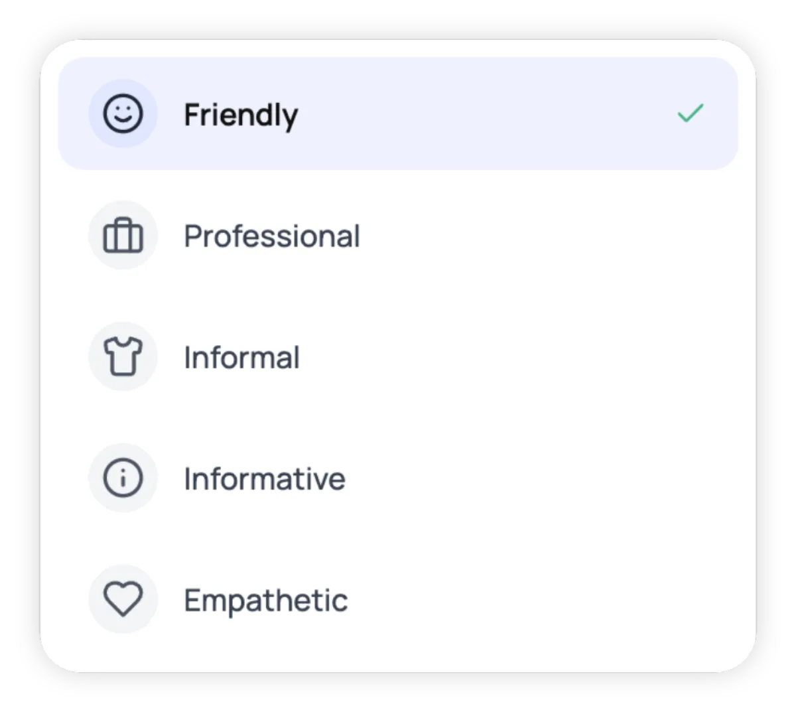
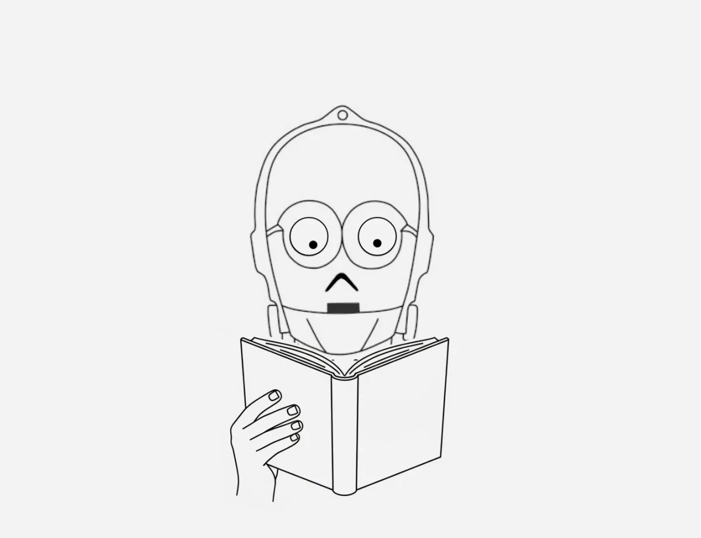
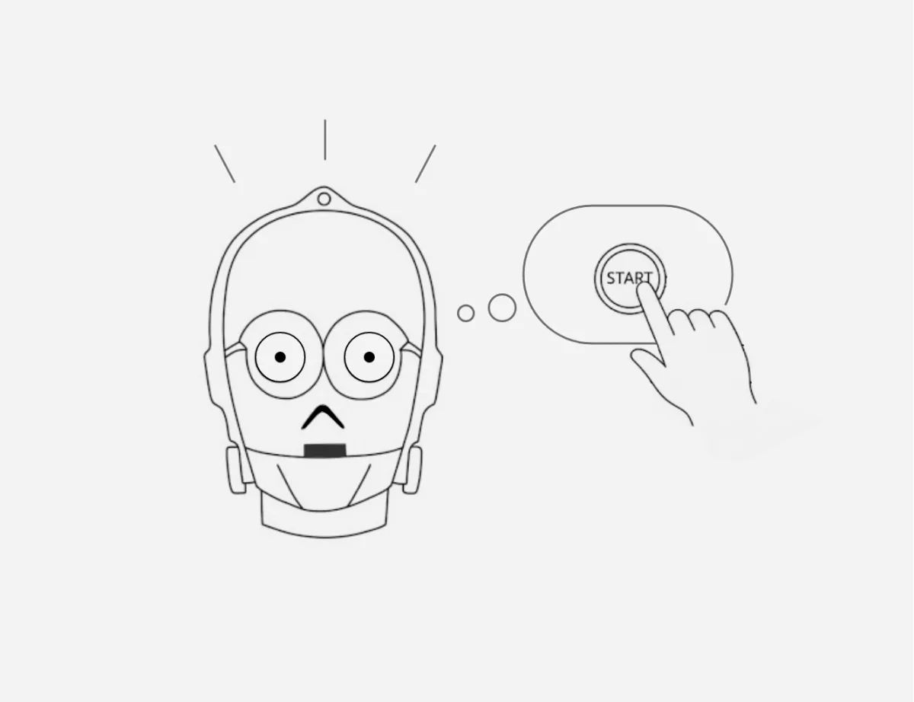
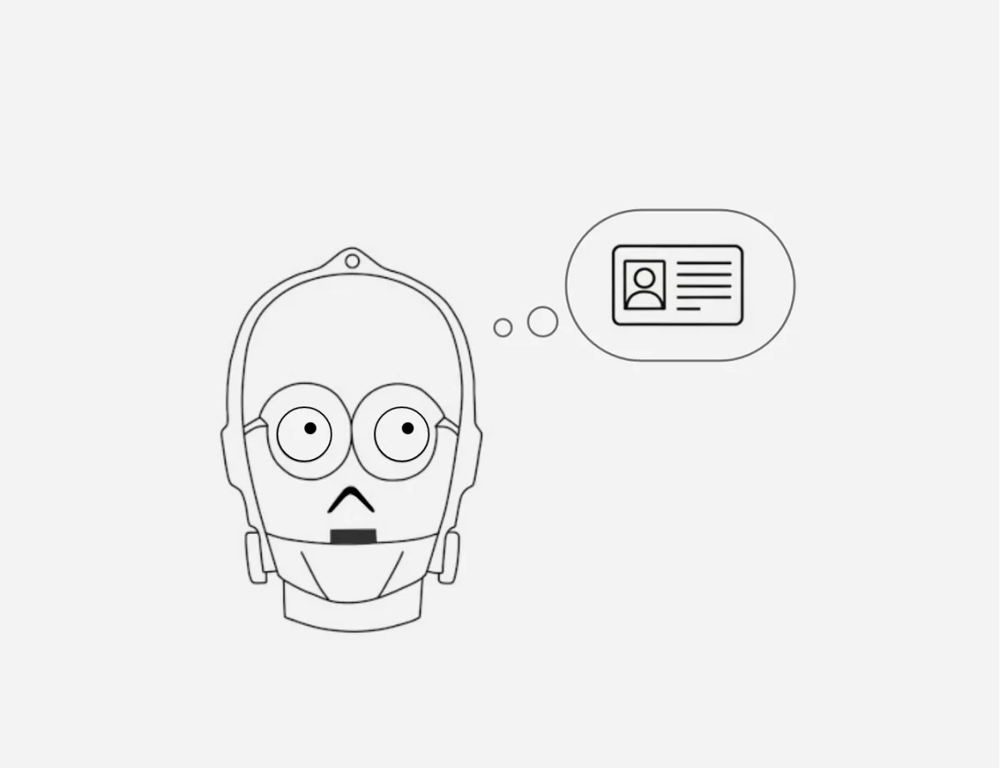
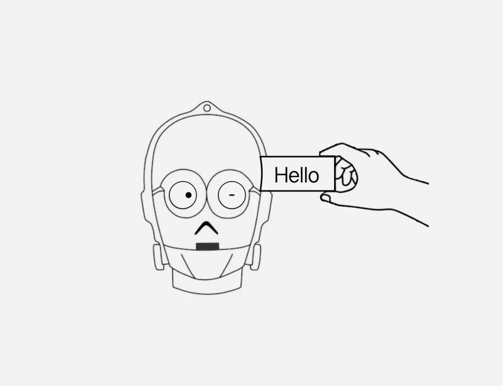

TOMOSTomos Bot delivers AI-powered answers to your clients' website visitors, using the knowledge you provide to give accurate, contextual responses instantly — under your own brand.
Pick an avatar, define a personality, schedule its availability, and choose colors that reflect your brand.
You define the context, the knowledge, and the rules it follows — TBot doesn't search the internet, you keep total control.
Every conversation is saved. Track questions, evaluate answers, and evolve the bot's context with real insights.
Set up keyword triggers and design the reply: text, cards, or buttons — exactly what you planned, no surprises.
Collect contact information from prospects during the conversation. You choose the fields, the bot asks, leads are saved.
With a customizable system prompt, you define the bot's guidelines and internal rules — it follows your directives.






Simply answer your clients. Focus on growing your business.
An AI chatbot you fully control — trained only on the knowledge you give it, deployed on your website under your own brand.
You feed it documents, FAQs, and context. It only answers from what you provided — no outside sources, no surprises.
Yes — avatar, colors, name, and availability hours are all yours to set.
No. It only draws on the context and knowledge base you provide — full control, no hallucinated web content.
Yes, tone and personality are configurable — formal, friendly, technical, whatever matches your brand voice.
Every conversation is logged so you can review questions and improve the bot's knowledge over time.
Yes — set up keyword triggers with a designed reply: text, cards, or buttons.
Yes, a fully editable system prompt lets you set the bot's guidelines and internal rules.
Yes — define which fields to collect, and the bot asks for them naturally during the conversation.
Multi-bot management is coming with the Scale plan — one dashboard for every client bot you run.
Become a TOMOS partner and put Tomos Bot under your own brand.
Become a partner →